Data for GIS: Adding data to ArcGIS
The background to data for GIS will be covered in the lecture segment at the beginning of the class, and the presentation and any other supporting materials will be available in Minerva. The lecture segment should help you to understand why you are doing these exercises. If you still aren’t sure, please ask Clare.
Learning outcomes
When you have completed this section of the workbook you should be able to
- describe the main types of data used in GIS
- use the tools provided in ArcGIS Pro to prepare data for further use
- find out essential information about the data and apply that to your use of the data in maps and reports
Introduction
In this section you will be creating a map from scratch using the data that you downloaded in the previous chapter. You will create a 1:10 000 topographic base map that is suitable to use as a fieldslip for geological field mapping, and later as a basis for digitising geological data.
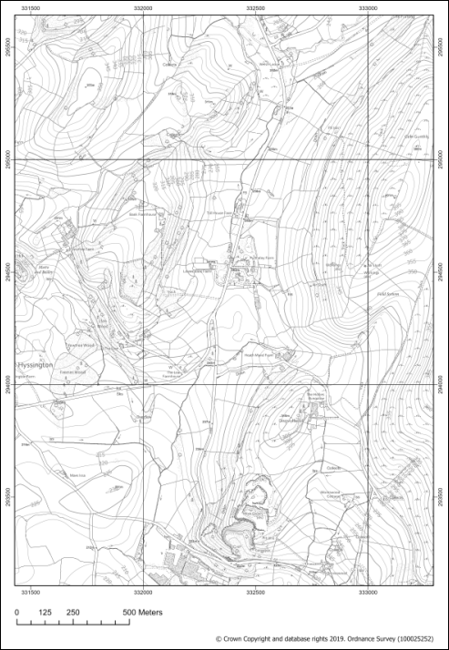
By creating this map you will also learn how to find out more about your data and how to use the tools available to process it before adding it to your map.
Obtaining the data
If you have followed the section on Digimap in the previous chapter you should have downloaded and kept examples of the following data
- Digimap
- VectorMap Local Raster
- OS Terrain 5 Contours
If you haven’t downloaded those, or have but can’t find them, then please return to the instructions for Digimap OS Collection and download them now, then come back here.
You should have set up a folder called gis when you worked through the introduction. If not, go back and follow those instructions now. (Though remember that if you are working on the VWD you will need to work with your data on the Desktop then copy it back to your network drive.)
- Create a new folder called
FindingDatain thegisfolder on your disk - Copy or save all of the Ordnance Survey data you have downloaded from Digimap into this folder
Unzipall of the zip files, if necessary, into this folder.
You should end up with a folder structure something like the image below.
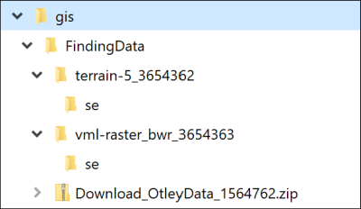
Keeping all of your data in the same project folder as the rest of your map data means that it is much easier to find it and you can keep a copy of the whole project as a backup so that you don’t lose data.
Starting a new map project
In the previous chapters you used an ArcGIS project that I had set up for you. This time you need to set up your own project from scratch.
- Open ArcGIS Pro by going to the Start Menu and searching for it, or by using AppsAnywhere.
- Make sure that you have found ArcGIS Pro, not any other version of Arc or ArcGIS, and open that program

- When the ArcGIS Pro splash screen opens click on the
Mapitem to openNew > Blank Templates > Map

You’ll get a form to fill in with the project details.
- for
Namefill inFindingData- the same as the folder you’ve just put your data in - for
Locationbrowse to theFindingDatafolder that you put your data in, enter it, then clickOK - Untick the box next to
Create a new folder for this project - Click
OK

Doing it this way ensures that you are keeping all of your data in the project folder, which will help you to find it later.
ArcGIS should open a new map with a view of the World. This is the default ESRI basemap and is a general layer which is useful as it gives you some idea of where you are when you zoom in. The section on Using basemaps in the first chapter of this workbook shows you how to select alternative basemaps.
In the Folders part of the Catalog pane you should see several new files and folders appear in the folder in which you have created the project, for example, FindingData.gdb; ImportLog; FindingData.aprx.
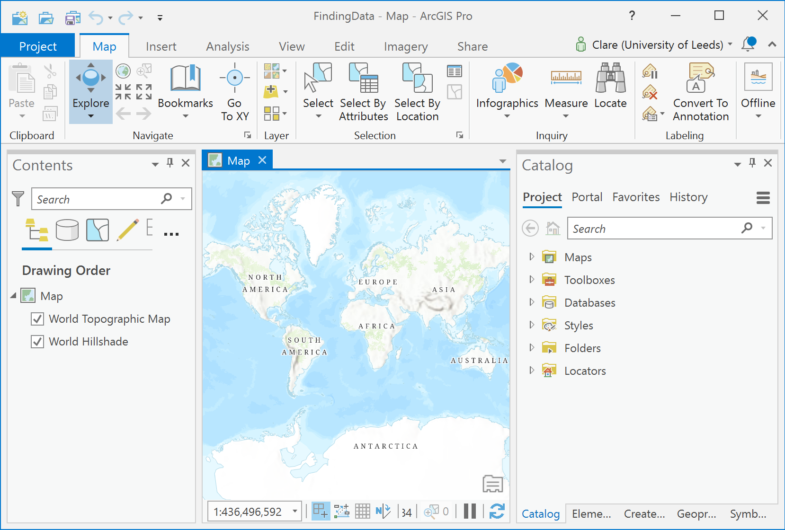
If you open up the folders you should be able to see the data too. If you can’t and you are sure that you put your data in that folder, make sure that everything is unzipped.
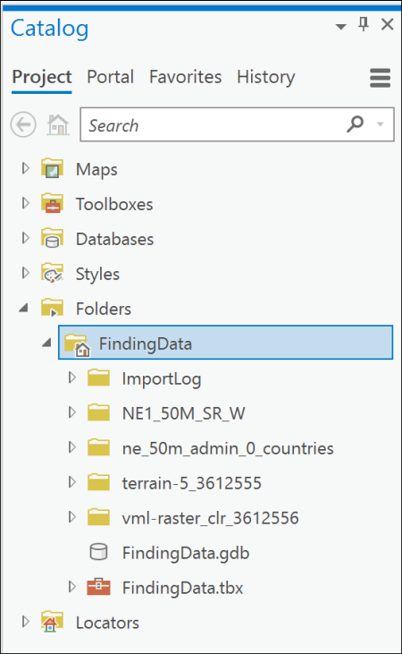
Adding downloaded data to your map
One thing to remember when adding data to a map is that the first layer that you add sets the spatial reference, or coordinate system for that map. When downloading data from Digimap the raster layers don’t always have coordinate system information, so it makes sense to start by adding the vector layers.
Start by having a look at your data so that you know more about it. You are going to be creating a map of Britain with the spatial reference of British National Grid so need to check whether all of the layers are set to that.
- In the
Catalogpane, look for each of the datasets that you downloaded in turn - right-click on one of the data files - which in this case will either have an extension of
.tifor.shpdepending on which dataset you are looking at - go to
Propertiesand have a look at the information under the subheadings there.
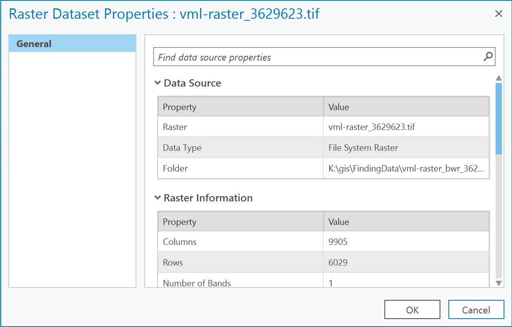
Make a note for yourself of the following properties for each dataset (if you’re not sure, just have a go! It doesn’t matter if you are wrong). You’ll need to drop down some of the subheadings by clicking on them.
- is the data vector or raster?
- what is the data type?
- what is the Projected Coordinate system?
- what is the Geographic Coordinate system?
When you’ve finished close the Properties dialog by clicking either OK or Cancel.
Remember that the lecture segment for this practical covered the differences between vector and raster file formats. If you are still unsure please go back and have another look at the presentation on that.
Your notes should show something like the following -
| Data | Vector or raster? | Data type? | Projected coordinate system? | Geographic coordinate system? |
|---|---|---|---|---|
| OS Terrain 5 contours | vector | Shapefile feature class | British National Grid | GCS OSGB 1936 |
| OS VectorMap Local raster | raster | File system raster | British National Grid | GCS OSGB 1936 |
Adding vector data
Now that you have decided which layers are vector, and which have the correct coordinate system for your final map, you can start to think about adding the data to your map.
We’ll start with the OS Terrain 5 contours because they are a vector layer and have the projected coordinate system British National Grid, which is what we want our map to be in.
Merging contour shapefiles
The next thing to check is how many separate shapefiles have you downloaded for this area?
- In the Catalog find the folder containing the Terrain 5 contour layers and drop down so that you can see the contents
- you’ll need to drop down the subfolders too, until you can see something like the image below
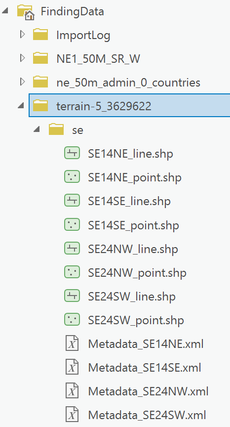
You should find that you have multiple files, some of which have point as part of the name, some of which have line as part of the name, and a few files with an extension of .xml.
You can ignore the point files and the xml files.
How many line shapefiles do you have?
In my folder, shown above, I have four line shapefiles.
Try adding these files to your map by dragging and dropping them into the top of the Contents. You can select multiple files to add by holding down the Ctrl key and clicking on each of them.
Arc should zoom to the area of your tiles. You should find that you have something like the image below (though possibly with a different number of tiles). You have contour lines, but Arc has assigned a different colour to each tile.
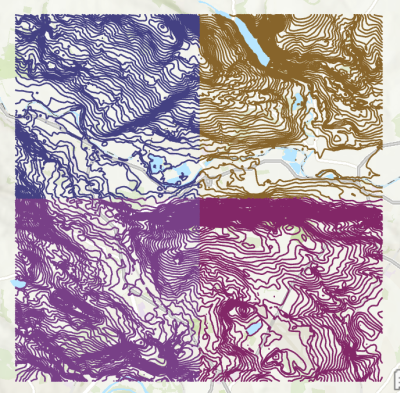
At the moment the shapefiles are still four separate files, and if you styled them you would have to style each one in turn. It makes sense to combine, or merge these files into one.
If you only have one tile of contour data you don’t need to merge it, but you should have a minimum of two for this exercise.
- Remove the contour files from your map
Creating a base map with OS data: 1. Merging contour shapefiles
This video clip can be found in the module area of Minerva or in the full list of video clips.
- From the Analysis tab of the ribbon find
Mergein the Analysis Gallery of the Tools group - I found it in theManage Datasection - and click on it. - OR go to the Analysis tab of the ribbon, click on
Toolsto open the toolbox panel on the right, thenToolboxes > Data Management Tools > General > Merge - Add all line contour shapefile tiles as the input by clicking on the folder icon to the right of the
Input Datasetsbox- You may need to include files from more than one sub-folder. Remember that you only need to add the line shapefiles, not the point.
- to add more than one tile at a time use the
Ctrlkey and then click on each file
- Click on the folder icon next to
Output Datasetand save your output to the project geodatabase, that is the file with the same name as your project and an extension of.gdb, and give the output feature class a name such ascontoursthat will help you to identify it again later - leave the rest of the fields as the defaults
Run- Arc should merge your shapefiles, add them to the geodatabase and then zoom in and display them on your map
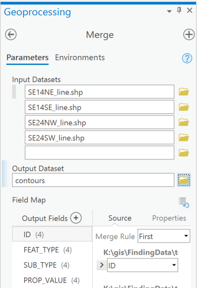
If Arc doesn’t take you to the correct location for your data, remember that you can Zoom to Layer by right-clicking on the contours layer in the Contents and selecting Zoom to Layer from the context menu.
You should end up with something like the image below with a random choice of a single colour for all of your contours. The ESRI basemap layer still shows behind the contours and helps you to see that your contour layers are appearing in the vicinity of Otley.
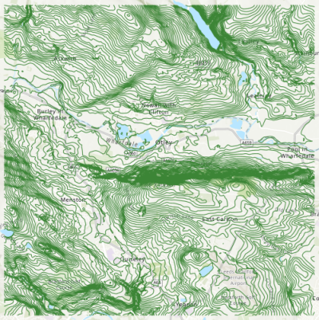
If you need to save disk space, or even just want to tidy up your data, you can now delete the folder containing the original contour data. If you need it again you can either unzip the file that you downloaded from Digimap, or just redo the download.
Checking the coordinate system of your map
Now that you have added your first layer it is a good idea to check that the coordinate system of your map is correct.
Remember that we are creating a map which should be in British National Grid.
- In the Contents pane right-click on the
Maptitle at the top of the list - select
Propertiesfrom the context menu - go to the
Coordinate Systemssubheading and check theCurrent XY
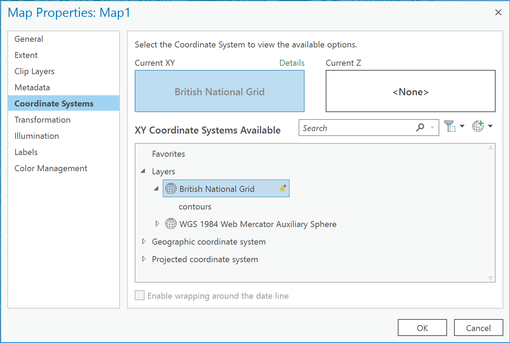
The Current XY should be British National Grid - but if it isn’t don’t panic.
- Look in the box below which shows
XY Coordinate Systems Available - Find your contours layer and click on it and the
Current XYentry should change to match it. - Once you have the correct coordinate system click
OK
If your contours are set correctly, the Current XY should change to British National Grid to match.
If this doesn’t work, or you don’t have a layer in British National Grid try the following
- In the
searchbox above theXY Coordinate Systems Availablebox typeBritish National Gridand press return - You should see the result in an opened out list under Projected coordinate system (you may need to click on the subheadings to open them out) - click on the entry for
British National Grid - Once you have the correct coordinate system click
OK
Adding raster data
Now we’ll move on to the VectorMap Local raster data. The name rather gives it away for this one, though it is a bit confusing, but this is a raster format.
If you remember, back in the Digimap section, you opened this file to have a look at it. It should have opened in an image editor, and is basically a picture of a map. You’ll be using this as a detailed background layer for your map as it should show more information than the ESRI basemap layer. Because of this, if you have more than one tile of data you don’t need to merge them. You can just add multiple files to the map and they will still show as the background.
Other raster data layers contain data, rather than being a picture. You can add them in the same way, but they will serve a different purpose. You’ll investigate these sorts of layers later in the course.
This video clip can be found in the module area of Minerva or in the full list of video clips.
To add the raster tiles
- Find the file or files1 in the
Folderssubheading of the Catalog Pane.- The background files from Digimap should be under a folder called something like
vml-raster-bwr - and have names like
vml-raster...tif
- The background files from Digimap should be under a folder called something like
- then simply drag and drop the raster file(s) from the Catalog pane to the Contents pane so that they are placed below the contour layer, but above the ESRI background layer. Don’t forget that you may have files in more than one folder.
- If you are offered the choice of creating
PyramidssayYes2
If you end up with entries such as Band_1 in the catalog don’t add those layers. Make sure you add the tif file directly.
Your raster maps may appear rather bad quality, this is usually just an onscreen problem. When you print your map, or zoom in close, it should be fine.
Zoom in and pan around to check that the VectorMap Local raster background map looks right with your contours, e.g. that the contours don’t go straight through the middle of lakes, or that streams don’t appear to flow uphill. Always check your data - don’t assume it will be correct!
If you have a clipped layer the background map may well not cover the same area as the contours - don’t worry about that.
If you think the black and white background is too dark/strong you can always fade it a bit by using Transparency
Set the scale of your map to 1:10 000. Your map should look something like the image below, though probably with the contours a different colour.
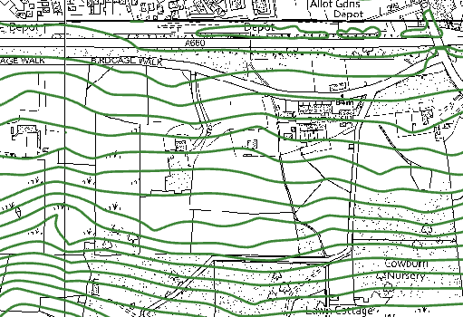
Removing the ESRI background layers
This is a good point at which to remove the ESRI base map layers, e.g. World Topographic Map and World Hillshade, so that they don’t cause problems later. These layers are useful, but can slow ArcGIS down when you have a map in a projection which isn’t Web Mercator, and can cause Arc to crash.
- Right-click on each of the basemap layers in turn in the Contents
Remove
Saving your map
Remember to save your map at regular intervals. It won’t auto-save.
Either go to
Project > Saveor use the keyboard shortcutCtrl-S
Symbolising the data on your map
Symbolising is the word that ESRI use for the process of making your data look good - this could also be described as styling.
Your map now shows the required data, but doesn’t quite look right. The VectorMap Local raster data is fine - that is already styled and there isn’t anything else you need to do with it.
The contours also need to be changed to grey rather than the current random colour, and they are rather thick. They also need to have labels added showing the height or they aren’t being informative.
Setting the reference scale
Before you start symbolising and labelling your layers it is a good idea to set the reference scale to the scale at which you are intending to print the map. In this case you are putting together a fieldslip and you are most likely to need to print it at either 1:10 000 or 1:5 000. Setting the reference scale will ensure that when you choose styles or the label size they will look the same as they will once your map is printed.
- Start by setting the scale of your map to 1:10 000, using the dropdown below the map view
- In the Contents pane right-click on the title of your map - usually
Map - Click to
Set Reference Scaleand it’s done
You can reset the reference scale just by going to a different scale and doing the same, or you can clear the reference scale completely if you wish to.
Styling the contours
Now that the contour lines are in your project you need to symbolise them so that they look professional. For this take inspiration from the British Geological Survey published maps3.
This video clip can be found in the module area of Minerva or in the full list of video clips.
- Select your contours layer in the contents pane then click on the
Appearancetab of the ribbon and click on theSymbologybutton to open the Symbology pane to the right of your map.
Symbolising as unique values
It is good practice to symbolise your contours so that most are of a standard width, but contours at a regular interval are made slightly thicker. This makes it easier to interpret the heights.
Check the attribute table for your contour feature class (right-click on the layer in the contents pane and select Attribute table.
For Ordnance Survey contour data there will be a column which divides the contours into master and ordinary. If your area is on the coast you may also have high and low water mark.
Make a note of the column name, you’ll need that for setting the symbology.
- In the symbology pane change the dropdown under
Primary SymbologytoUnique Values - Dropdown the box next to
Field1and change it to the column that you made a note of above
Arc should automatically classify your data as the number of different sub-types in your feature class and give them a random colour.
You will also end up with a value labelled all other values. You don’t need it for this map so the next step shows you how to get rid of this.
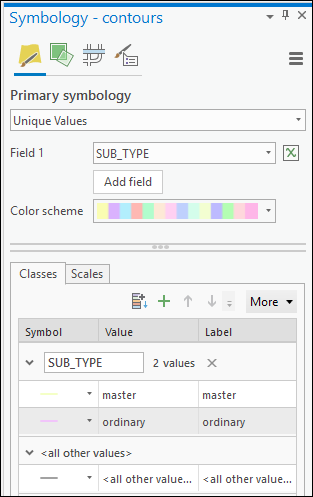
- To get rid of
all other values- on theClassestab click on theMorebutton which has a little down arrow - Untick
Show all other values
You shouldn’t notice any difference on your map, but it will tidy up your contents pane, and if you were going to add this layer to a map legend it would stop it showing there too.
Styling the contour lines
Back in the first chapter you styled the layers on the Malham map. This is a similar process so it should seem familiar.
The automatic / default styling of the contour lines is unlikely to be satisfactory. To style the two different types of line
- Click on the symbol to the left of one of the line types on the
Classestab - Check that you are on the
Propertiestab of the next panel, not the Gallery - Change the colour and line width as suggested below - you can play around with the settings later when you see what they look like on the map
- Go back to the symbology pane between each value so that you symbolise both the master and the ordinary contours
For a black and white or greyscale map
- Color = Grey 40%
- Line width
- Master / index contour = 0.8 pt
- Standard / ordinary contour = 0.4 pt
- Click
Apply
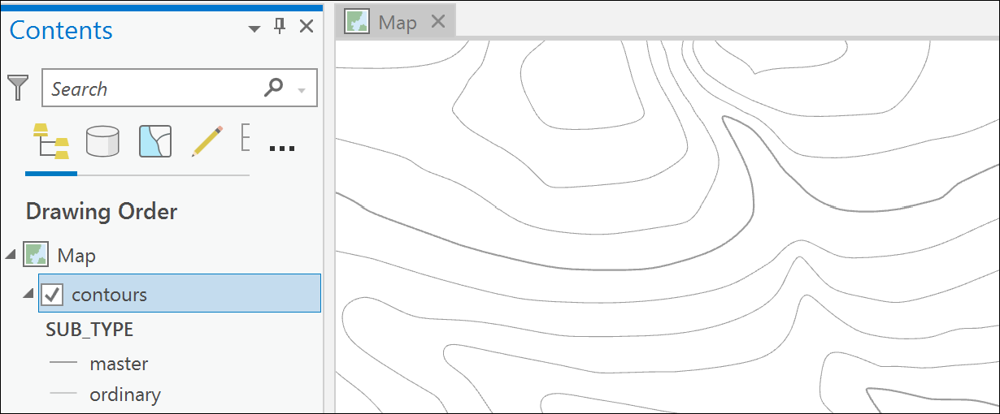
For a faded colour map
- Color = Seville Orange (hover over the colour patches to see their names!)
- Line width
- Master / index contour = 0.8 pt
- Standard / ordinary contour = 0.4 pt
- Click
Apply
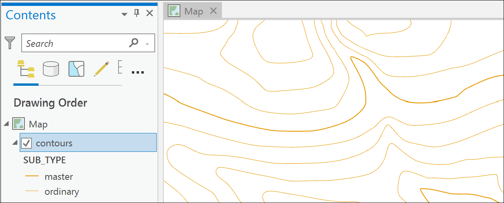
Labelling the contours
It is essential to add labels to the contour lines to show the height. Without labels contour lines are basically worthless.
This video clip can be found in the module area of Minerva or in the full list of video clips.
Have a look at the attribute table of the contours feature class again.
Again, make a note of this, you’ll need it for labelling the contours.
To label the contours
- Select the contour layer in the contents panel
- Click on the
Labelingtab of the ribbon - then click on the
Labelbutton at the far left of the ribbon
Labels will appear on your map, but they are unlikely to be the labels that you actually need.
To change the content of the labels
- In the
Label Classgroup of the labeling tab use theFielddropdown to select the field that you made a note of above - the one which holds the information about the height of the contour
The labels should change to the height. But if you have a closer look at the contours you should notice that the labels don’t actually appear on top of the lines to which they refer. You need to change the Label Placement.
- In the
Label Placementgroup of the labeling ribbon use the arrow on the right to find theContourssetting (I find that this doesn’t always work first time so keep an eye on it). - If you click on the little arrow in the bottom right corner of the group you should open the
Positiontab of theLabel Classpane - Drop down the
Placementsubheading and you should be able to check the settings there
The contour placement should set your labels so that they are on top of the lines and curved, which is how contour labels appear on Ordnance Survey maps. Now you need to change how the text looks.
- Click on the
Symboltab of the Label Class dialog - Drop down the
Appearancesubheading - From there you’ll most likely need to set a smaller font size, e.g. 8 pt, and change the colour of the text symbol to match the colour of the contours
- Once you’ve changed the settings click
Applyto see what they look like. You may need to wait a bit while Arc applies them - labelling contours can slow things down rather.
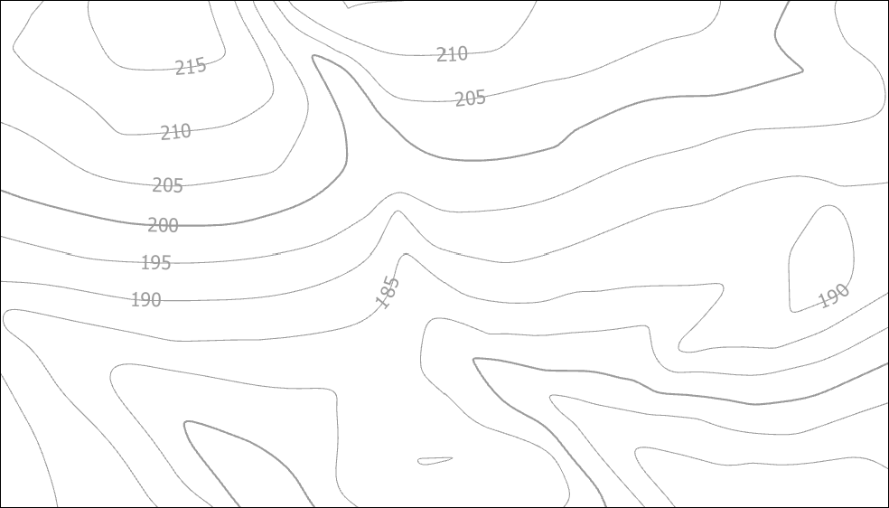
You can try out alternatives to see what looks best. Remember that the contours and their labels need to be present and visible so that they can be used in map reading, but not so large that they dominate the map. If in doubt, check OS or BGS published maps as suggested at the start of this section.
Creating a layout for printing
You will need to add various map elements to a layout for your field slip. You will work through a whole chapter on Layout and Presentation later in this module, but for now you’ll do a quick version.
- Go to the
Insertribbon and click onNew Layout - Select
ISO - Portrait > A4 - On the ribbon click on the arrow under
Map Frameand select your map - Now click on the page and draw out a “box” - don’t worry too much about the area/size for now
- At the bottom of the screen change the scale to
1:10 000to zoom in to your map - With the map still selected click on
Gridon the ribbon then selectMeasured Grid > Black Vertical Label Gridto add grid references around the outside of your map - Click on
Scale Barin theMap Surroundsgroup and select any of theMetricscale bars and then click on the blank area around the map to add it to your layout - Use the text tools to add the following copyright text for the Ordnance Survey data that you have used. The copyright symbol doesn’t seem to work if you try typing it on the layout directly. Double-click on the Text item in the Contents and a properties dialog should open on the right where you can type the text you want.
© Crown copyright and database rights 2020. Ordnance Survey (100025252)
You can play with the settings for the elements you have added, but we will be looking at layout and presentation in more detail later.
Your final field slip map should look something like the map below:
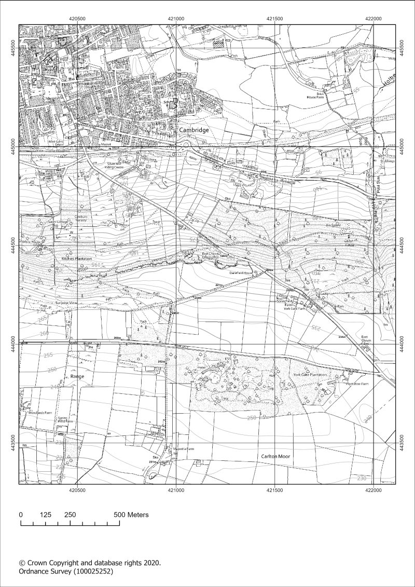
When you’ve finished save your map and close ArcGIS Pro.
If you are working in the VWD save your work to your network drive now.
-
If, when you downloaded the data from Digimap, you selected to
Clipthe data you will probably only have one tile or file of data. If you selected not to clip, you will probably have multiple tiles or files. ↩ -
Pyramids take a moment to create when you first load the file, but make it much quicker to move around in your map once they are loaded. ↩
-
You can see the scanned geological maps online on the BGS website. Try to make sure that you look at a recently published example such as the 1:25 000 Ardnamurchan Central Complex map published in 2009. You won’t find the BGS 1:10 000 maps online. ↩